|
|
|
Малое Море, Тутай По многочисленным просьбам выложил немного фотографий. А вот ведь клево жарким летом смотреть сноубордическое
видео! Тутай. Одно это слово чего стОит... Вот мой кореш Лёха там все лето работал админом турбазы, там турбаза недавно появилась, она даже еще наполовину стройка. И вот все лето он иногда мне звонил, говорил, что и моцик туда завез, и серф там раздобыл, и что там можно клево отдохнуть, ты только приезжай. Ну вот я и собрался, а чего не собраться, конец лета, можно бы уже и собраться :) Тем более это же на Малом Море, а это же район мне малознакомый, а это лето я же объявил Летом Открытий, так что все оки-доки! Тут и сестренка Юлька у меня уже неделю жила, от скуки маялась в Слюдянке, вот и решили мы - едем! Хоть на четыре дня, но едем! Накануне отъезда звонит мне студенческий друг Саня, он с семейством в отпуске, приехали на недавно купленном CVR`е из Наушек в Аршан и были разочарованы попсовостью курортного места. А по сему предложил мне сходить на Соболиное озеро. А я предложил поехать на Тутай. Буквально за час до нашего с Юлей отъезда на электричке, все подумали-порешали, и вот едем в 8 вечера на Сашиной машине, с его женой и сыном. Из всей поездки особенно запомнился ночной туманный Кучугский тракт, прямой как стрела. Еще одним маленьким приключением был ночной поиск турбазы Тутай. Ну мы это приключение на свою Же сами нашли, Лёха нам конкретно сказал - ждите меня на трассе, я подъеду. А мы смотрим - указатель на турбазу, написано "Тутайский Прибой", ну и решили поехать навстречу Лёхе. А это другая турбаза оказалась! В итоге в условиях плохой сотовой связи, разветвленной сети дорог и дорожек, среди холмов незнакомой местности, в три часа ночи, мы долго искали Лёху, а он - нас :) Проводник-спаситель явился нам сначала в виде звука трактора, потом добавилось сияния света за холмом, потом свет двух фар, и наконец, за рулем джипа-пикапа страшно-потрепаного вида мы увидели Лёху, конечно же бодрого и веселого вида :) Он нам показал дорогу до турбазы, выделил временно домик переночевать, немного поговорили и спать разбежались по койкам... День 1-й, 23 августа. Проснулись. Погода серенькая. Иду умываться на Байкал. То есть на залив Тутай, но вода в нем чистая, и сам Байкал недалеко виден, так что - Байкал :) На турбазе, это 16 домиков, тишина и покой, конец сезона. Или все спят еще? Возле одного домика вижу серф и парус, наверное здесь надо Лёху будить. Навстречу выходит симпатичная девушка, вспоминаю, что ночью у какой-то Светы брали ключи и боялись ее разбудить, думаю - повезло Лёхе с соседкой и говорю - "Привет, Света! Лёха дома?". Она удивляется, ведь она и правда Света, и отправляет меня подальше, в другой домик :) Пошел, разбудил, поговорили о делах не столь далеких и порешили, что жить нам в том же домике, а если начальство понаедет - скипнуть в палатку. После завтрака наша скромная компания решила сама себе провести обозревательную экскурсию посредством восхождения на близлежащую сопку. С нее мы увидели весь залив Тутай, расположенную на ней турбазу, где мы вписались, и вторую турбазу, куда мы ночью чуть не заехали. Еще мы увидели остров Ольхон (Уууу!), пролив Малое Море (Аааа!), поселок Сахюрту, который был как раз под сопкой с другой стороны, ну и дальше вид на север через бинокль показал нам много-много маломорских мест и турбаз. В конце экскурсии у нас с Сашей вот такой диалог случился: 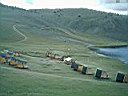 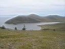 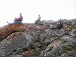 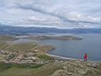 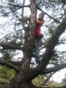 На том и порешили. Саня с женой и сыном сегодня еще потусуются, а завтра утром поедут. Ну блин, отпуск же, машина же, круто блин :) А пока - лодки, катамараны... О, серф! Лёха давал мне первые уроки - стоять сначала надо научиться на доске без паруса, ходить по ней тудым-сюдым, падать и залезать. Потом второй урок - на суше с парусом разбираться, куда его надо вертеть за гик, чтобы ветер ловить. Ну и потом третий урок - на доске с парусом, тут уже надо ветер ловить и плыть куда-нибудь :) не, еще надо научиться разворачиваться и плыть обратно :) Так что я почти весь день купался около серфа, от холода спасали серферские шорты (морально грели), термуха (физически), горячий чай (периодически) и баня (в конце дня). И столь насыщенный день был еще дополнен где-то в середине катанием на Моцике! Это дикая зверюга такая. Есть вот горные велосипеды, так вот это - горный мотоцикл! Не, я конечно не спец по мотоциклам, по молодости был пользователем "Минска", но этот "Кавасаки" - просто пипец какой страшный зверь! Юлька от него тоже в восторге была и поэтому она без базара пассажиркой запрыгнула на него. И погнали мы куда глаза наши ошалелые глядели :) И заехали на еще одну другую горку, причем эта зверюга не просто в приличную гору едет с двумя человеками, а еще и разгоняется, если газу дашь! Заехали на гору, а там вид на большой Байкал, причем на Очень Большой, и причем Сверху! Вау! Очень завораживает, можно долго смотреть, реально круто! 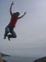 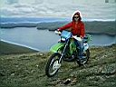 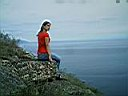 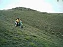 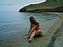 Посмотрели, пофотались и вниз поехали. В стороне внизу заприметили пляжик, укромный такой пляжик. Стопудово нудистский, только вот с Юльки нудистка никакая. Но фотать и фотаться любит много и по разному, а я таких девушек уважаю, и не важно, какой у них размер... э-э-э, объектива :) Короче, Юлька бегала и купалась, я ее фотал, потом поехали обратно вверх с этога пляжа и конкретно встряли. Потому как мы сюда спускались на моцике вообще страшно, а подниматься на непривычном диком звере по раздолбаной дороге, это вообще капцы. Ну вот он меня и уронил. Или я его. Неважно, главное что покоцались оба. Я то ладно, а вот на мотокрасавце появился шрам, причем на видном месте. И Лёха очень расстроился, и это с учетом того, что я еще парус на серфе порвал. И хотя я пообещал купить новый парус, еще больше и красивее, но все равно - в первый же день на Тутае все знали, что я все ломаю и порчу :) 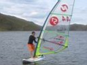 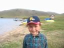 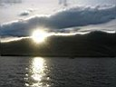 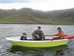 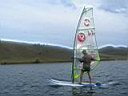 И самое прикольное в том, что этот день никак не заканчивался, он как-то плавно перешел в вечер и мы катались на катамаранах по заливу. Потом появились люди из команды Шульца, а конкретно - давно невидимая Ксюша Шу Кейси, которая кстати тоже все лето говорила, что тут клево потому как жила здесь :) а еще появился Лёня, который приволок усилок, колонки и даже диджейский пульт и как начал музычку гонять. Да причем такую музычку, что я такую уже давно не слышал, и давно не танцевал. Причем сначала особо никто не танцевал, а вот Лёня сам такой себе поколбасился, и глядя на него все пошли колбаситься. Ну может и не все, но кто был - отрывались по полной. Я так не скакал уже несколько лет, это точно :) Причем это все под открытым небом, на свежем воздухе, девченки вокруг полуголые танцуют! Заводит не по детски - хорошо, что рядом Байкал есть, всегда можно окунуться и поплавать под звездами :) Супер-дискотека! Диджею Лёне, девушкам Свете и Маше - огромный привет !!! Еще прикол хотите? Ночь тоже не хотела заканчиваться :) после того как дискотеку пришлось закончить (ну там отдыхающие спать хотели во втором часу ночи) мы пошли сидеть у костра. И собралась компания, и горел костер, и дул ветер, и Лёха на гитаре играл и пел. А как Лёха на гитаре жжот, это надо не только слышать, но и видеть! Артист! В общем, было всем счастье, стопудово!
День 2-й, 24 августа. Утром рано Саша с семейством поехали на Снежную, а я с Юлькой на моцике поехали в МРС, по магазинам, и посмотреть, что там к чему. Ну там пристань есть со всякими катерами и яхтами, паром на Ольхон посмотрели. Вернулись на Тутай, взяли лодку и поплавали по заливу, островки камышей пофотали, Юльку пофотали, меня тоже :) 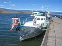 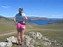 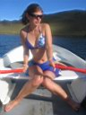 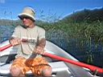 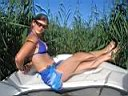 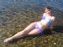 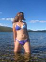 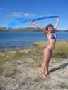 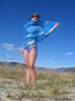 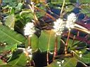 Потом я на серфе опять учился плавать. Потом играли в волейбол. Света и Маша работали инструкторами на турбазе, а в конце сезона им делать особо нечего, вот мы к ним и присоседились в плане в волейбол поиграть, позагорать, искупаться, чай попить, музычку послушать, глинтвейн сварить, куда-нибудь на мотоцикле сгонять на лунную дорожку посмотреть, в баню сходить... 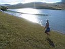 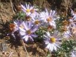 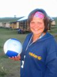 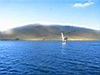 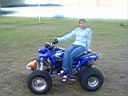 Продолжение следует ... Август, сентябрь 2007 |